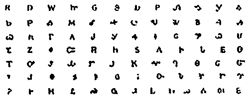

Sequoyah Caverns
Sequoyah Caverns & Ellis Homestead
Useful Information
| Location: | Off U.S. 11 and I-59, 56km south of Chattanooga, Tennessee. |
| Open: |
All year Mon-Sat 8:30-17, Sun 13-17, last tour 16. Closed Thanksgiving and 25-DEC. [2009] |
| Fee: |
Looking Glass Tour:
Adults USD 12.95, Children (4-12) USD 6.95, Children (0-3) free. Groups (15+): Adults USD 10.95, Children (4-12) USD 5.95. Lantern Tour: Adults USD 14.95, Children (8-12) USD 10.95, Children (0-7) not allowed. Groups (15+): Adults USD 12.95, Children (4-12) USD 8.95. Wild Cave Adventure (short): Per Person USD 20. Wild Cave Adventure (long): Per Person USD 30. [2009] |
| Classification: |
 Karst cave Karst cave |
| Light: | electric |
| Dimension: | T=16°C |
| Guided tours: |
Looking Glass Tour: D=60min. Lantern Tour: D=60min. Wild Cave Adventure (short): D=90min. Wild Cave Adventure (long): D=180min. |
| Photography: | |
| Accessibility: | |
| Bibliography: | |
| Address: |
Sequoyah Caverns & Ellis Homestead, 1438 County Rd. 731, Valley Head, AL 35989, Tel. +1-256-635-0024, toll free (inside USA) 800-843-5098.
E-mail: |
| As far as we know this information was accurate when it was published (see years in brackets), but may have changed since then. Please check rates and details directly with the companies in question if you need more recent info. |
|
| Last update: | $Date: 2015/11/20 13:23:41 $ |
History
| 1890 | Abner Ellis applied for the land. | |
| 1965 | start of development by Clark Byers. |
Description
|  |
| Image: the Cherokee language written alphabeth by Sequoyah. |
Like in many caves of the area, indegneous Indians found shelter in Sequoyah Caverns. Hence the cave was named for the famous Cherokee Indian Sequoyah. Sequoyah invented the the only written alphabeth of the Cherokee language solely from the resources of his mind. The illiterate Indian is called a genius for he is the only man in history known to conceive an entire alphabet or syllabary.
Sequoyah was born in the town of Tuskegee in Tennessee. He had a Cherokee mother and a German father. As a young warrior he fought beside Sam Houston and Andrew Jackson against the Creek Indians in the battle of Horseshoe Bend in the War of 1812. In the early 1820's he moved to the big Cherokee town of Willstown in northern Alabama, just south of Sequoyah Cavern. While living at Willstown he finished the alphabet on which he had labored for twelve long years. Within a few months almost all the Cherokee Nation could read and write. In 1838 he walked with his people on the Trail of Tears, when the Cherokee were removed forcefully to Oklahoma. In 1843 he traveled to México, became ill and died.
In honor of his great contribution the giant Sequoia trees, Sequoia National Park in California and - of course - Sequoyah Cavern were named after him.
The Ellis familiy settled in this area immediately after the Indian removal in 1837. In 1890 Abner Ellis applied for the land according to the terms of the Homestead Act of 1862. His descendants still own the Cave and lease it out. The most famous feature of the cave are the Looking Glass Lakes, reflecting stalactites and stalagmites in their black surfaces. The imagination and creativity of the owner Clark Byers produced outstanding visual effects.
- See also
 Search Google for "Sequoyah Caverns"
Search Google for "Sequoyah Caverns" Google Earth Placemark
Google Earth Placemark Sequoyah Caverns & Campground,
official website.
Sequoyah Caverns & Campground,
official website.- History - Sequoyah Caverns of DeKalb County, Alabama 888-805-4740
- Alabama's Sequoyah Caverns and Cathedral Caverns - Budget Travel
- Sequoyah Caverns in Valley Head, Alabama - Associated Content
- Sequoyah Caverns Photo Gallery by Keith Luken at pbase.com
- Sequoyah Caverns - a photoset on Flickr